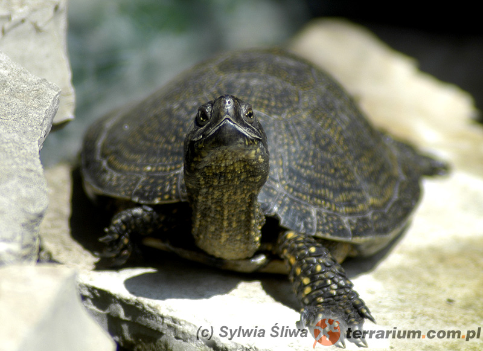
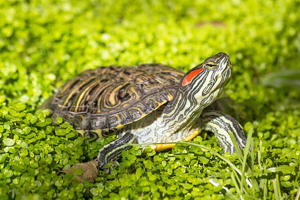

Wybór odpowiedniego gatunku żółwia wodnego to kluczowy krok w hodowli. Najpopularniejsze gatunki to żółw błotny i żółw czerwonolicy. Każdy z nich ma swoje unikalne wymagania dotyczące środowiska i diety. Zanim zdecydujesz się na zakup, warto dokładnie zapoznać się z informacjami na temat wybranego gatunku, aby upewnić się, że spełnia on Twoje oczekiwania. Pamiętaj, że niektóre gatunki mogą osiągać duże rozmiary, co wymaga większej przestrzeni do życia.
 |
 |